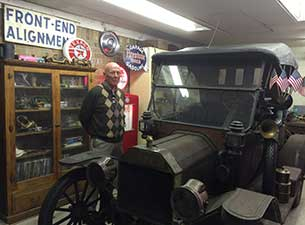
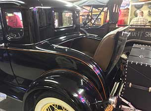
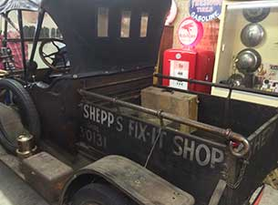
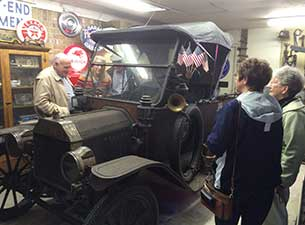
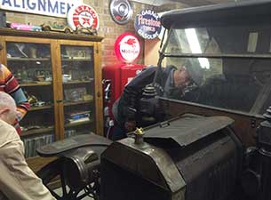
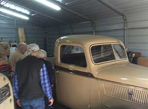
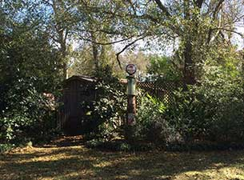
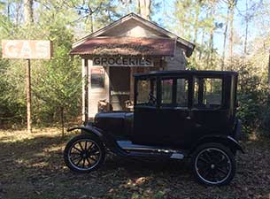
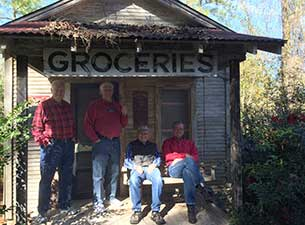

TOURS AND OUTINGS
Date: Sunday, January 25, 2015
Tour: John and Marilyn's Model T and A Garage
Location: Conroe, TX.
The group traveled to Conroe for a mid-winter tour and met for lunch at the Whistle Stop Cafe. Afterwards, John and Marilyn treated everyone to a wonderful tour of their garage and collection of antique cars. The grounds of their home was a treat in itself, with an antique windmill, grocery store, and other related items from a bygone era. After the tour, Marilyn treated the group to a delicious array of desserts.
|  |  |  |
|  |  |  |
|  |  |  |
Texas Touring Ts
 E-mail:admin@TexasTouringTs.com
E-mail:admin@TexasTouringTs.com